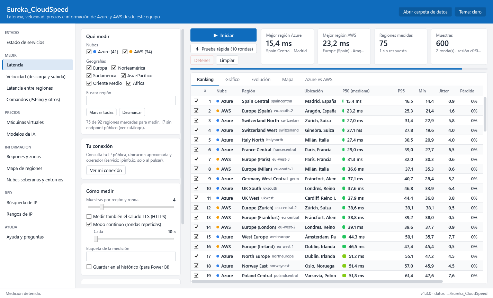
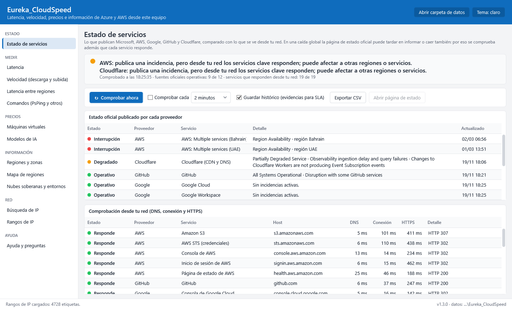
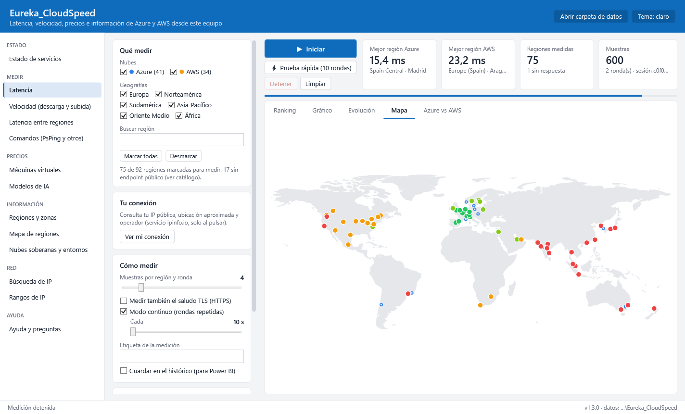

Qué hace
Latencia en directo
Ranking de 41 regiones de Azure y 34 de AWS con mediana, P95, jitter y pérdida, mapa mundial, evolución en el tiempo y comparativa Azure frente a AWS.
Estado de la nube
Estado oficial de Azure, Microsoft 365, Power Platform, AWS, Google Cloud, GitHub y Cloudflare, comparado con comprobaciones propias desde tu red. Detecta caídas globales aunque la página de estado del proveedor también haya caído.
Test de velocidad
Descarga, subida y latencia con carga contra tu propio almacenamiento en Azure o AWS. Los scripts lo crean, miden y lo borran al terminar para no generar cargos.
Excel y Power BI
Libros de Excel con gráficos nativos y editables sin necesitar Excel, y exportación a Power BI Desktop gratuito con modelo en estrella y medidas DAX.
Precios y regiones
Precios de máquinas virtuales de Azure y EC2, precios de modelos de IA, latencia publicada entre regiones de Azure, zonas de disponibilidad y nubes soberanas.
Red e IP
A qué servicio y región de Azure o AWS pertenece una IP o un dominio, y rangos de IP por servicio y región listos para copiar.
Capturas




Cómo empezar
- Descarga
Eureka_CloudSpeed_Portable.exedesde la página de la última versión y, si quieres, comprueba su huella SHA-256 en las notas de la versión. - Ejecútalo. No necesita permisos de administrador ni instala nada.
- Elige las nubes y regiones y pulsa Iniciar.
Requisitos: Windows 10 u 11 con Windows PowerShell 5.1 (incluido en Windows) y salida a Internet por el puerto 443.
Privacidad y seguridad
No incluye telemetría: los resultados y el histórico se guardan solo en tu equipo y se pueden borrar desde la propia aplicación. Las direcciones del test de velocidad se guardan cifradas con DPAPI. La única consulta opcional a un servicio externo es la de «Tu conexión» (ipinfo.io), y solo al pulsar el botón.
Los ejecutables todavía no están firmados digitalmente, así que Windows puede mostrar «Editor desconocido» y Smart App Control puede bloquearlos. En ese caso usa Eureka_CloudSpeed.cmd desde el código fuente. Está prevista la firma gratuita con SignPath Foundation para proyectos de código abierto con cierta difusión: si te resulta útil, darle una ⭐ en GitHub o compartirlo ayuda a conseguirlo.
Documentación
In English
Eureka_CloudSpeed is a free, portable, open-source (MIT) Windows app that measures latency and speed from your own network to 75 Azure and AWS regions, shows the status of Azure, Microsoft 365, AWS and other providers (detecting global outages even when the status page itself is down) and exports to Excel with native charts and to Power BI Desktop. The interface is in Spanish for now. Download the latest version.
¿Te interesa preparar equipos Windows 11? Prueba también Eureka_Utils.